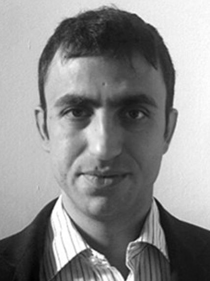
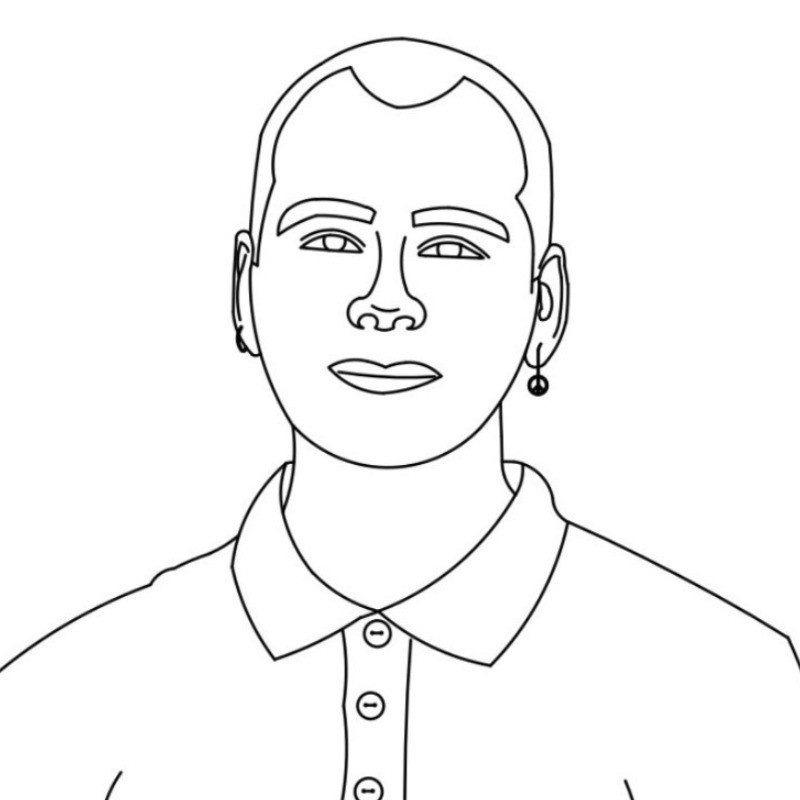

Michail E. Kiziroglou - Assistant Professor
Michail E. Kiziroglou obtained his diploma in electrical and computer engineering from Aristotle University of Thessaloniki, Greece, in 2000 and his master in microelectronics from Democritus University of Thrace, Greece, in 2003. He holds a Ph.D. in microelectronics and Si spintronics awarded by the University of Southampton in 2007. He has been a Research Associate and Research Fellow with the Optical and Semiconductor Devices group, Department of Electrical and Electronic Engineering, Imperial College London. He is an Associate Professor at the Department of Industrial Engineering and Management, International Hellenic University, Greece. Throughout 2016 he worked as an Associate Project Scientist at the Department of Mechanical Engineering, University of California at Berkeley, on the development of microgenerators for aircraft applications. He has over 90 publications in international journals and conferences. He is a senior member of the IEEE and a member of the Institute of Physics. His research includes energy harvesting devices, energy autonomous wireless sensors and medical microsystems.
[Google Scholar] - [ResearchGate]
Asterios Bantis - Microengineering Website Maintainer
Asterios Bantis obtained their diploma in Automation Engineering from the Department of Industrial Engineering & Management of the International Hellenic University. They specialise in Cybersecurity, System Administration, and Embedded Systems Engineering. They currently are a contributor to projects overseen by the Department of Industrial Engineering & Management and/or the International Hellenic University. In the past, they've also contributed to the Aristotle Space & Aeronautics Team, the IHU's AutoROS Team, the Balkan Physics Olympiad, and the International Workshop on Microsystems. They're also the maintainer of this website. Their research includes computer and data science, systems engineering, and medical microsystems.
[Personal Website] - [LinkedIn] - [GitHub] - [Personal Website]